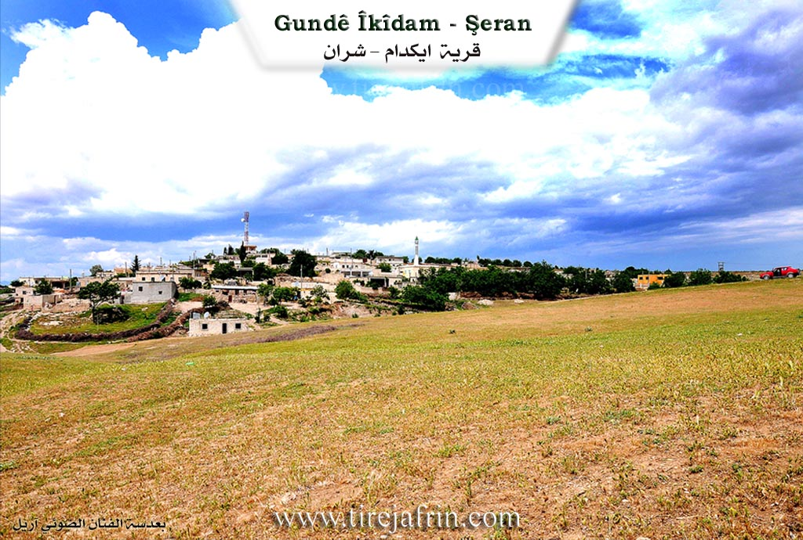

General Information
Nahiya (Subdistrict)
Şera
Also Known As
Damah, Dû Mal, Dama, Iki Dam, Ikî Damê, Îkidamê, Îkîdamê, ايكي دام, دامه, ايكي دامي
Tribes
Reşwan
Families, Clans, etc.
Ekaş, Hecûmera, Malê Bûti, Malê Ce'fer, Malê Cemîl, Malê Egîdê, Malê Ehmed, Malê Çawîş, Malê Çomî Zînê

Photos


Basic Information about Îkîdamê
Source: Ax û Welat
Etymology: Turkish for "Two Houses" (Iki Dam), referring to the first two structures built by the founder
Foundation Date/Period: Late 19th century
Caves: Çayê Mehrebê, Şikefta Qehwê, Şikefta Malê Cemîl Axa, Şikefta Sêdev, Şikefta Mixare, Şikefta Şimşek, Şikefta Mihrab
Springs: Kaniya Heftêr, Kaniya Dunîj, Kaniya Ecer, Kaniya Ebdale Xerabe, Kaniya Qulaheftêr, Kaniya Dara Tîpê, Kaniya Teştê, Kaniya Xwînê
Hills: Til Bekêrê
Ruins: Govaşkeha Sebrî Axa
Other Landmarks: Geliyê Kûr, Geliyê Henaran, Geliyê Doman, Geliyê Golşan, Geliyê Awer, Geliyê Hîşne, Zinara Kûr, Qopî Pasavanê, Çiyayê Şimşek, Çiyayê Simaqa
Summaries
I. Summary from TirejAfrin Site (English) of Îkîdamê
Source: https://www.tirejafrin.com/site/kura%20afrin%20%20sheran%20-%20eke%20dam.htm
It is stated in the book Çiyayê Kurmênc Efrîn A Geographical Study: Kdam, Îkîdam, Dame / 729 inhabitants - 350 hectares - 15km - 540m altitude:
It is a Turkish name, meaning "The two stones, or the two columns." Also, "Dam" in Kurdish means "gloomy and sad" / Koranî dictionary. There is no connection between the meaning of the Arabicized name and the original name. The naming may be connected to acts of worship and asceticism in the Christian religion which used to take place in ancient times on stone columns, or on trees or similar things.
It is a medium-sized village located about 300m from the Turkish border, and about 5km from the city of Sîrus (Nebî Hûrî).
It is stated in the book Efrîn... Her River and Her Green Hills: Îkî Dam: A village in Çiyayê Kurmênc following the Şera sub-district, Efrîn region, Heleb governorate (708 inhabitants). It is a small village located in the eastern part of the Çiyayê Kurmênc massif near the Turkish border on the northwestern slope of a limestone plateau furrowed by streams descending towards the valley of the Efrîn river. It is bordered to the north and east at a distance of 300m by the current border with Turkey. It is 15km away from the town of Şera towards the northeast.
It is bordered to the north by a plain and valley planted with olive trees, the Turkish border, the course of the Efrîn river, and the village of Şiltah. To the south, it is bordered by a limestone mountain chain planted with forest trees, fruit trees, and olives, the village of Yazî Bax, and the Syrian-Turkish border. To the west, there is a wide plain and some valleys furrowed by streams and the village of Dêr Sewan. To the east, there is a mountain chain and the Turkish border.
The number of its houses is about 30 houses, and its age is about 250 years. Its old houses are of stone and mud with wooden roofs, and the modern ones are of stone and reinforced concrete. An electricity network, a paved road, and a primary school are available in the village. They drink water from artesian wells and cisterns within the houses.
The residents of the village work in rain-fed agriculture on an area of 350 hectares (olives, vines, grains, legumes) and in irrigated agriculture from artesian wells on a limited area, alongside raising sheep and goats. The village drinks from rainwater in winter and from cisterns dug next to the homes. It contains a modern olive press and an agricultural cooperative. It is connected to the sub-district center by a paved road. Its most important family is the Ekaş family.
Village Mukhtar: Horîk Omer
Sources of Information:
- Book: جبل الكرد (عفرين) دراسة جغرافية Çiyayê Kurmênc (Efrîn): A Geographical Study by د. محمد عبدو علي Dr. Mihemed Ebdo Elî.
- Book: عفرين .... نهرها وروابيها الخضراء Efrîn... Her River and Her Green Hills by عبدالرحمن محمد Ebdulrehman Mihemed from the village of Qetme.
- Studies of Navenda Tirej Soft / Ebdulrehman Hacî Osman.
- Some residents of the villages.
Preparation and Execution: Director of the Tirej Efrîn site: Ebdulrehman Hacî Osman 20/12/2013
II. Summary of Îkîdamê from Ax û Welat
Source: https://www.youtube.com/watch?v=Awl-axfYgro
The village of Ikîdam (also referred to as Ekîdam) is located in the Şerra (Şerawa) district of Efrîn, situated directly on the border with Turkey, approximately 4 to 5 kilometers from the city of Kilis. The name Ikîdam is Turkish in origin, translating to "Du Mal" (Two Houses), a reference to the settlement's humble beginnings when the founder constructed just two homes at the site. Although the Baathist regime attempted to Arabize the name to "Dama," the locals retain the original designation and its historical meaning.
The village was founded in the late 19th century by Omer Axa, the son of Welî Axa. The family's arrival in the region was a result of conflict and subsequent exile by the Ottoman authorities. Omer Axa's brother, Zûr Xelîl Axa (also referred to as Xelîl Axa), was a prominent figure who led a force of fighters against the Ottomans between 1865 and 1885 due to a conflict with the governor of Kilis. Following their exile, the family settled in the area, and Omer Axa established Ikîdam. The lineage of the founders, the Hecûmera family, remains the dominant social force in the village; indeed, all residents are cousins belonging to this family, which is part of the larger Reşwan tribe.
Historically, Ikîdam was administratively connected to Kilis until the drawing of the borders following the fall of the Ottoman Empire (referenced by elders as the time of the "Fransiza" and the dividing line). This division severed the village's connection to their lands and relatives in northern villages like Deli Osman and Erganê, which remained on the Turkish side. The border is now only 500 meters away, and elders like Apê Wrig recall a time when the border was open and residents could travel freely to Kilis for trade and daily life before landmines were planted and strict controls were enforced.
The geography of Ikîdam is defined by its numerous valleys and caves. Notable natural features include Geliyê Awer, Geliyê Kûr, and Zinara Kûr. The village is home to many caves, such as Şikefta Qehwê, Şikefta Mihrab, and Şikefta Malê Cemîl Axa, which were historically used for habitation and shelter. During the French Mandate era in the 1920s, authorities reportedly confiscated artifacts and maps found in these caves, taking them to the museum in Heleb. The village also possesses 11 ancient hand-dug wells and several springs, including Kaniya Qulaheftêr and Kaniya Ecer, though some have dried up over time.
Culturally, Ikîdam is distinct for its preservation of culinary traditions adopted from Kilis, most notably the making of Kinefe (Kunefe). Introduced to the village by Şêx Necmeddîn, the father-in-law of a resident, the preparation of this sweet dessert has become a village-wide skill, maintained even after the border cut them off from the city where the tradition originated. The villagers also prepare a specific regional dish called Urman, made with meat, yogurt, and frike, which is prepared by the Reşwan tribe families in Ikîdam and the neighboring related villages of Dêrswan, Erebwêran, and Vêrganê.
II. Ax û Walat Book 1
183
THE VILLAGE OF ÎKIDAMÊ
15.11.2016
The name of the village is in the Turkish language. It means (two houses).
The village of Îkidamê is affiliated with the Şera district of the Efrînê canton, located north of the town of Şera. It is about 35 km away from the city of Efrînê.
The village of Îkidamê is located on the border of northern Kurdistan with Rojava, about 5 km from the city of Kilisê across the border.
184
Umer Axa is the first person, or the founder, of the village. All the people of the village are from one family. Previously, the village of Îkidamê was affiliated with the city of Kilisê, but after the border was drawn, this village became affiliated with the Şera district.
About 600 people live in the village, and there are about 100 houses in the village. Their relatives are in the villages of Dêrsiwan, Ereb Wêran, Vêrganê, and Bekerê, and they are all from the Reşwanî tribe.
It is worth mentioning that Xelîl Axa, who was the brother of Umer Axa, fought against the Ottomans with 1000 fighters in the years between 1865 – 1885 AD. That war was due to the outbreak of disputes between him and the Governor of Kilisê. As a result, Xelîl Axa built and seized about 40 square kilometers. After that, the Ottoman state seized all the properties of Umer Axa and Xelîl Axa, and he was later captured by the Ottomans and killed.
To the east of the village are the city of Kilis and the village of Erganê across the border and the border of northern Kurdistan; to the south are the village of Dêrsiwanê, the Şîmşekê mountain, and the border; to the west and north are the Simaqa mountain, the Ecer spring, and also 2 caves between the border of Rojava and Bakur.
There are many caves in the village, such as the cave of three tambourines, Qehwe Mixare, Şîmşek. Mihrab, which is a place where
185
people used to gather and live. In 1992, the Syrian regime seized many maps that had been found there and took them to the museum of Helebê.
There are many valleys and ravines around the village, such as; the Kur valley, the Henaran valley, the Doman valley, the Kuşlan valley, the Ewir valley, the Hişîne valley, and Zinara Karû. In the Ewir valley, there are 4 springs: the Qulê Heftêr spring, the Darê Tîpê spring, the Teştê spring, and the Xwînê spring. To the north of the village is the Mezin valley, which starts from Kilisê and reaches the Efrînê river.
To the west are the village of Şîltehtê and the village of Bekereyê. This village was previously a ruin, and the border passed through it, but now it is called Til Bekerê. The Efrînê river also passes to the north of the village. After Kurdistan was divided, all the villagers' properties remained on the west side, that is, behind the border.
The villagers make their living from agriculture, and primarily from olive groves, vineyards, cherry trees, and many other types of fruit. Along with agriculture, some families own livestock and make their living from it. A few people also work in the institutions and bodies of the Autonomous Administration.
The village commune is named after martyr Mahsûm, and the women's commune is named after martyr Sekîne Cnsiz. There is a primary school named after martyr Ehmed, from grades one to six, where students study.
186
There is an ancient olive press in the village, and it was built underground, named the olive press of Sebrî Axa, but unfortunately, it has now collapsed.
There are 11 ancient water wells in the village, which were dug by hand.
There was a guest room in the village named the room of Cemîl Axa. Guests were welcomed there, and the people of the village gathered there. Also, all problems were discussed and resolved, and the villagers spent their days and nights together.
Transcriptions and Subtitles
| Source | Video | Subtitles | Transcript |
|---|---|---|---|
| Ax û Welat 1 | Watch Video | Download SRT | View Transcript |
Foundation/Origin Information of Îkîdamê
Founded by ancestors like Welî Axa and his brother Dur Xelîl Axa of the Reşwan tribe, who were exiled from Turkey and fought against the Ottomans.
Source: Ax û Walat Transcript
Possible Village Name Meaning of Îkîdamê
A Turkish name meaning "the stones, or the columns". "Dam" in Kurdish means "sad and mournful". The naming might be related to Christian worship on stone columns. The original Kurdish name was Dû Mal.
Source: TirejAfrin Site
Originally known by its Kurdish name "Dû Mal" (Two Houses). It was given the Turkish name Îkidamê during the Ottoman period and later subject to an attempt at Arabization as "Dama" by the Ba'athist regime.
Source: Ax û Walat Transcript